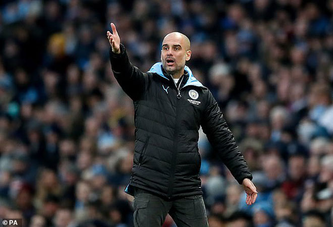

Trang Chủ
Thể Thao
Giáo Dục
Bóng Đá
Bóng Đá
"Ông
trùm" Barca sắp bị lật ghế: Lộ kế hoạch đưa Pep
Guardiola trở lại

Lịch thi đấu của Barca hiểm họa khôn lường, dễ bị Real
soán ngôi
Cơ quan chủ quản: Bộ Thông tin và Truyền thông
Số giấy phép: 09/GP - BTTTT, cấp ngày 07/01/2019
Tổng biên tập: Phạm Anh Tuấn
Tòa soạn: Tòa nhà C'Land - 156 Xã Đàn 2, Đống Đa, Hà Nội
© 1997 Báo VietNamNet. All rights reserved.
Chỉ được phát hành lại thông tin từ website này khi có sự đồng ý bằng văn bản của báo VietNamNet.